history of SSN Card
| DATE | CHANGE IN SSN CARD |
|---|---|
1936 |
First version of SSN card. No form number and no revision date. The preprinted information on the card face was in blue ink with a Social Security Board seal (in a lighter shade of blue) in the center of card. The SSN was in red ink. The date of issue was typed on the card. Had a “stub” to type in the mailing address. (The stub was to be put away for safe keeping.) Left edge was perforated. The card had a curved header showing “Social Security Act.” Under the header was “account number.” Had preprinted legends “date of issue” and “employee's signature.” The instructions on the back were in black ink. 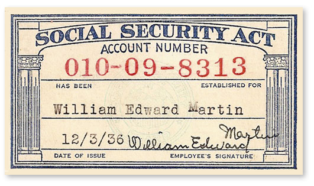https://georgiainfo.galileo.usg.edu/gastudiesimages/Social%20Security%20Card.htm  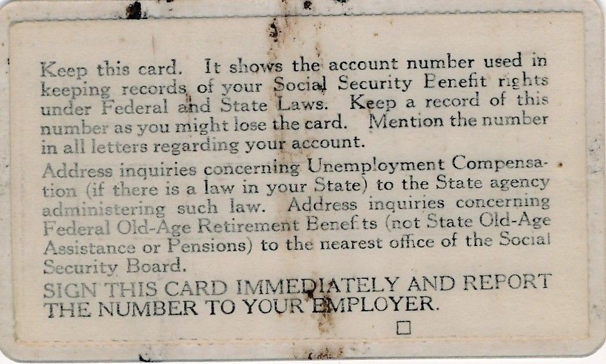 eBay item number:163534272068 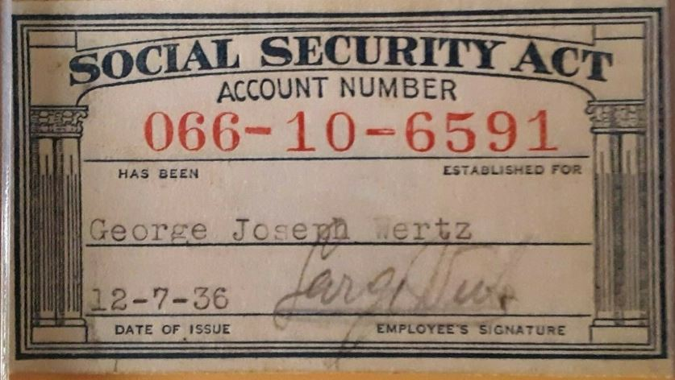 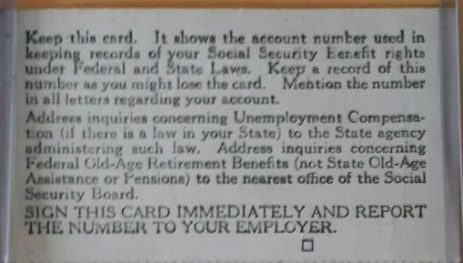 eBay item number:323705953604 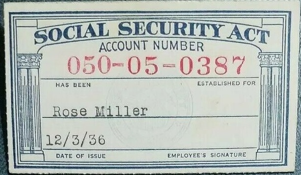 eBay item number:183706153457 |
1937 – 1938 |
Second version of SSN card. Same as the first version of the card. The stub had a centered legend “For Office Use Only.” 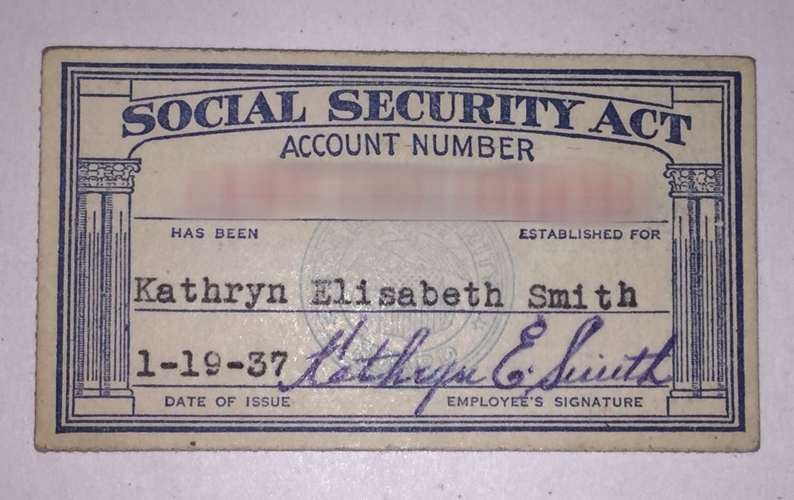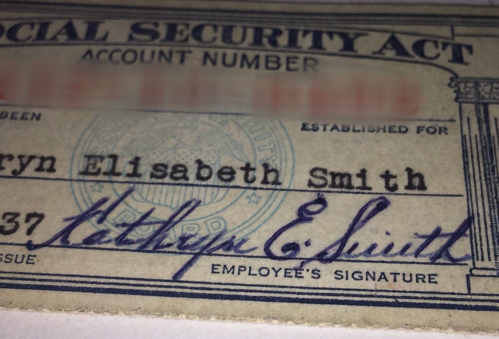 eBay item number:232452276071 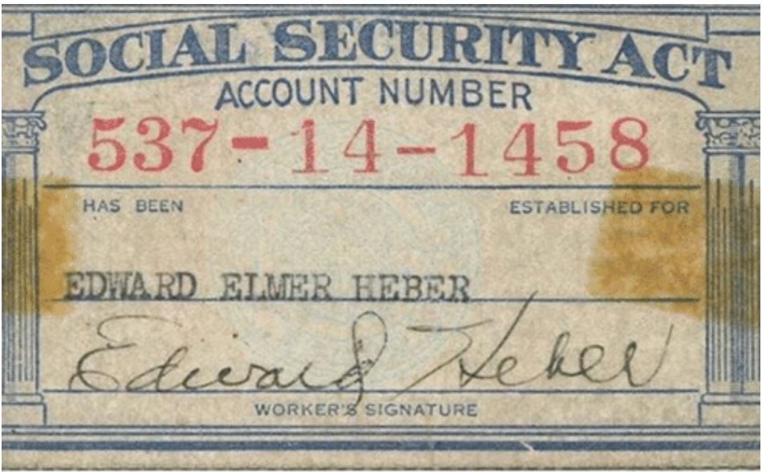 |
1938 – 1940 |
Third version of SSN card. The card itself was the same as the prior version but there were some variations in the printings. In some printings the SSN was printed on the stub; in others it had to be typed on. In some printings the stub had pre-printed spaces for the NH's name and address. First version of replacement SSN card. On the back of the card the form number was shown as “Form OA-702 DUP.” The card format was the same as the original SSN card except it was light green and had “DUPLICATE” printed diagonally across the face in red letters (green letters for those used by RRB). There was a Social Security Board seal in the middle of the card. The left margin was not perforated. The back of the RRB version showed only “RR” in large letters. The cards did not have a stub. Second version of replacement SSN card. The preprinted information was in blue ink. “Duplicate” was not printed on the card. On the back of the card was “Form OA-702.1.” Date of issue was omitted. All printed information was in black ink. Back of card had: Federal Security Agency, Social Security Board 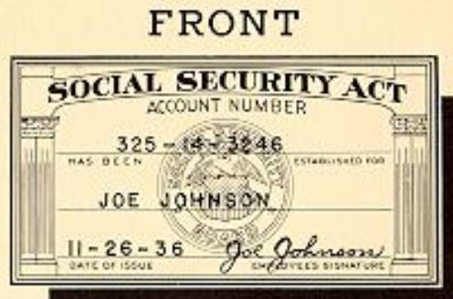 from 1939: https://www.ssa.gov/history/pics/card39.JPG |
1940 |
Fourth version of SSN card. The preprinted “date of issue” was eliminated. “Employee's signature” changed to “worker's signature.” The stub had the SSN preprinted in red. “Federal Security Agency” was printed on the back of the stub. Instructions said to show card to employer. Third version of replacement SSN card. The card was the same as the prior version. The stub had a box designated “worker's name and home address.” |
1942 |
Fourth version of replacement SSN card (12/42 revision). The revision date was printed on the back of the card. The legend “employer's name” was pre-printed on the stub. Preprinted information on the card and stub was in blue ink. Instructions (in black ink) included information about name changes. |
1943 |
Fifth version of SSN card (4/43 revision). The card looked the same as the prior version. Instructions on the back of the card were expanded. |
1944 |
Sixth version of SSN card (7/44 revision). The same as the prior version, except the left edge was straight and the form number (“Form OA-702”) and the revision date (7-44) appeared in the lower left corner of the stub and the back of the card. Fifth version of replacement SSN card (7/44 revision). The card was the same as the prior version. “Employer's name” was no longer preprinted on stub. |
1946 |
Seventh version of SSN card (1/46 revision). The seal was now the Social Security Administration Seal and both the card and the stub bore the legend “For Social Security Purposes Not For Identification.” Back of the card showed: Federal Security Agency, Social Security Administration. Sixth version of replacement SSN card (1/46 revision). Both card and stub showed “For Social Security Purposes--Not For Identification” across the bottom. Back of card showed: Federal Security Agency, Social Security Administration. |
1948 |
Eighth version of SSN card (6/48 revision). Some cards were the same as the prior version; others had a new header, “Social Security” with a small SSA seal in the header between “Social” and “Security.” There were variations in the printings of this version. Seventh version of replacement SSN card (3/48 revision). Card had the Social Security Administration seal instead of the Social Security Board seal. Back of card showed: Federal Security Agency, Social Security Administration. Eighth version of replacement SSN card (10/48 revision). The SSA seal appeared as a slightly stippled design in the same shade of blue as the rest of the format. Instructions on the back of the card and the stub were printed in blue ink. |
1949 |
Ninth version of replacement SSN card (7/49 revision). The card was the same as the prior versions with the “Social Security” header. |
1949 – 1951 |
Printings of the 6/48 version of the SSN card had a header “Social Security” with a small SSA seal between the two words. 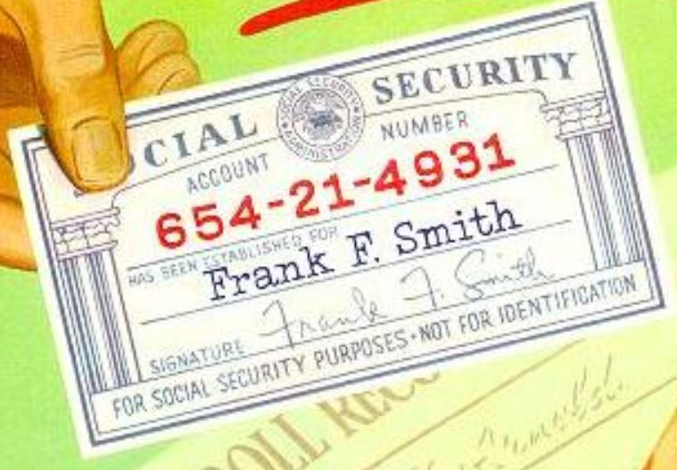from 1951: https://www.ssa.gov/history/pics/copy51.JPG |
1952 |
Ninth version of SSN card (1/52 revision). “Signature” instead of “Worker's signature” appeared on card and stub. Tenth version of replacement SSN card (1/52 revision). “Signature” rather than “Worker's signature” appeared on card and stub. |
1953 |
Tenth version of SSN card (4/53 revision). The card was the same as the prior version. The instructions on the back of the card were revised. Also showed: Department of Heath, Education, and Welfare, Social Security Administration. Eleventh version of replacement SSN card (4/53 revision). The card was the same as the prior version. Instructions on back of card were changed. Back showed: Department of Health, Education, and Welfare, Social Security Administration. |
1954 |
Eleventh version of SSN card (2/54 version). The seal on the card was changed to a small DHEW seal. Twelfth version of replacement SSN card (2/54 revision). The seal was changed to a DHEW seal. Twelfth version of SSN card (7/54 revision). The card was the same as the prior version. There were small changes in the instructions on the back of the card. Thirteenth version of replacement SSN card (7/54 revision). Card and stub were the same as the prior version. Instructions on the back of the card and stub used the term “field office” rather than “district office.” 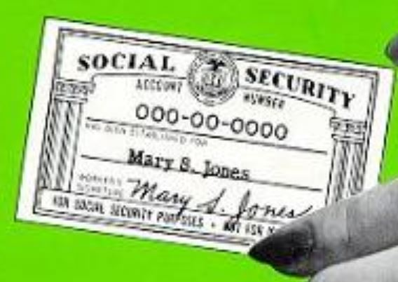from: https://www.ssa.gov/history/pics/miss54.JPG |
1956 |
Fourteenth version of replacement SSN card (3/56 revision). The card and stub were the same as the prior version. Instructions included information for the NH to get in touch with SSA if totally disabled. Thirteenth version of SSN card (4/56 revision). The card was the same as the prior version. Instructions on the back of the card said to get in touch with SSA if a worker became totally disabled. Fifteenth version of replacement SSN card (4/56 revision). The card and stub were the same as the prior version. Some cards may have been printed with 4/56 revision date (rather than 3/56). |
1958 |
Sixteenth version of replacement SSN card (10/58 revision). The card and stub were the same as the prior version. Instructions included information that a woman should contact SSA when she reached age 62. |
1959 |
Fourteenth version of SSN card (5/59 revision). The card and the stub were the same as the prior version. Instructions added information that a woman should contact SSA when she reached age 62. The instructions on the back were in black ink. |
1961 |
Fifteenth version of SSN card (9/61 revision). The card and stub revised to read “For Social Security and Tax Purposes -- Not For Identification.” Seventeenth version of replacement SSN card (11/61 version). The card and stub revised to read “For Social Security and Tax Purposes -- Not For Identification.” 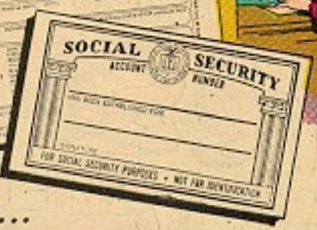from 1965: https://www.ssa.gov/history/pics/factoid2.jpg 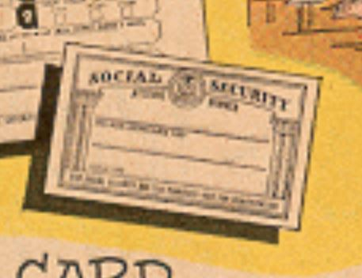 from 1969: https://www.ssa.gov/history/pics/1969p5.gif |
1970 |
Seventeenth version of SSN card |
1972 |
Eighteenth version of SSN card (1/72 revision). Legend “Not For Identification” was no longer on card (shown from 1946 to 1972). A large DHEW seal was in the middle of the card. The format of the stub was changed to envelope size (the card was a small two-sided tear-off of the stub). The instructions were expanded on the back of the card and stub and were in black ink. |
1974 |
Eighteen version of replacement SSN card. This was the last version of the replacement SSN card. Thereafter, original and replacement cards looked the same. |
1976 |
Nineteenth version of SSN card (4/76 revision). The card is the same as the prior version. The stub size is smaller. The instructions are less and are printed in blue ink. |
1980 |
Twentieth version of the SSN card (5/80 revision). The seal is changed to a DHHS seal. |
1981 |
Twenty-first version of the SSN card (4/81 revision). The card is the same as the prior version. |
1982 |
On May 17, 1982, SSA began annotating SSN cards issued to aliens assigned nonwork SSNs “NOT VALID FOR EMPLOYMENT.” Twenty-second version of SSN card (6/82 revision). The card is the same as the prior version. The SSN was removed from the card stub. Instructions add information about legend on non-work SSN cards. Twenty-third version of SSN card (9/82 version). The card is the same as the prior version. |
1983 |
Twenty-fourth version of SSN card (10/83 revision). SSA begins issuing counterfeit resistant SSN card (on blue banknote paper with randomly placed colored planchettes on the back). |
1984 |
Twenty-fifth version of SSN card (4/84 revision). The card is the same as the prior version with the instructions reformatted. |
1987 |
Twenty-sixth version of SSN card (1/87 revision). Same as prior version with slightly darker shade of blue ink on back of card and stub. |
1988 |
Twenty-seventh version of SSN card (1/88 revision). Anti-copy VOID pattern added as security feature for card. |
1992 |
On September 14, 1992, SSA began showing the legend “VALID FOR WORK ONLY WITH INS AUTHORIZATION” for aliens with temporary work authorization. |
1994 |
Twenty-eighth version of SSN card (January 1994). Language on the card tells NHs to “Keep card in a safe place to prevent loss or theft.” |
1995 |
Twenty-ninth version of SSN card (April 1995), has SSA's new seal on the card. |
1999 |
Thirtieth version of the SSN card (06/99). Corrected SSA address
to which cards should be returned. |
2002 |
Thirty-first version of the SSN card (12/2002). Instructions updated for clarity, to ask that the NH report changes in name, U.S. citizenship or alien status to SSA and not allow others to use SSN. The instruction “do not carry it with you” added to the back of the card. |
2004 |
Thirty-second version of the SSN card (03/2004). The language, “DO NOT CARRY IT WITH YOU” is added to the face of the card and the anti-copy VOID pattern is removed. In April 2004 the restrictive legend, VALID FOR WORK WITH INS AUTHORIZATION is changed to show INS change to DHS. |
2006- 2007 |
Thirty-third version of the SSN card (11-2006). Left side of SSN card carrier includes an explanation of the date printed under signature line on SSN card. Right side of carrier provides instructions for signing card. Beginning 04/07, the date the card is issued is printed under the signature line. Beginning 9/08/07, the number holder’s name will always be printed on two lines, with the last name printed directly below the first and middle names. |
2007 |
Thirty-fourth version of the SSN card (10-2007). The 10-2007 version of the SSN card includes additional security features. Some of the more recognizable features are: A unique non-repeating spiral design, replacing the existing marbleized pattern. The new pattern will be the same or a very similar color to the current background and will continue to be erasable.Color shifting inks added to the face of the card; very recognizable since it is used in currency. A latent image on the face of the card, visible only when the document is viewed at specific angles. Latent images that can be seen when the card is viewed at an angle. Color shifting ink (similar to that used on $20 bills) that changes colors when the card is viewed from different angles. A new production method that blends different color inks on the background of the card (colors flow from blue to aqua). Adding issuance date to the front of the card. Other features added to the card are not apparent to the naked eye and for security reasons are not disclosed to the public. Another change made to the Social Security card in 2007 was to put the first name and last name of the card holder on separate lines. This change was recommended by employer groups to help them distinguish the correct last name of an employee. |
2009 |
Effective Dates: 08/28/2009 - Present • Color-shifting ink • Intaglio printing in some areas on the front of the card • Latent image on the face of the card visible only when viewed at specific angles • Red fluorescent nine-digit alphanumeric number on back (beginning February 1996) • Intaglio microtext in signature line (when magnified, the line is actually letters spelling out SOCIAL SECURITY) • Yellow, pink, and blue planchettes (small discs) randomly displayed on the front and back of the card • Anti-copy pattern that is discernable when the card is photocopied • For original cards, a dash in each column on the same line as the SSN • Date the card is issued (CYD from the Numident) is printed under the signature line on the face of the card (beginning April 2007). |
https://www.ssa.gov/history/candlerops4.html
NumChk
info@numchk.com